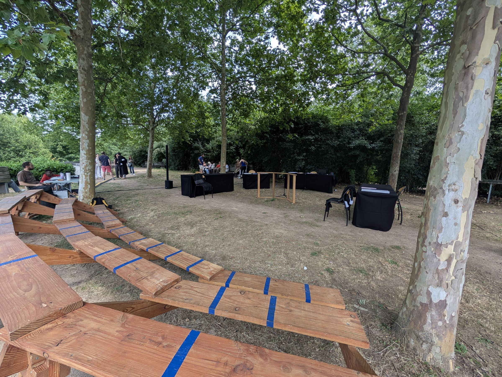
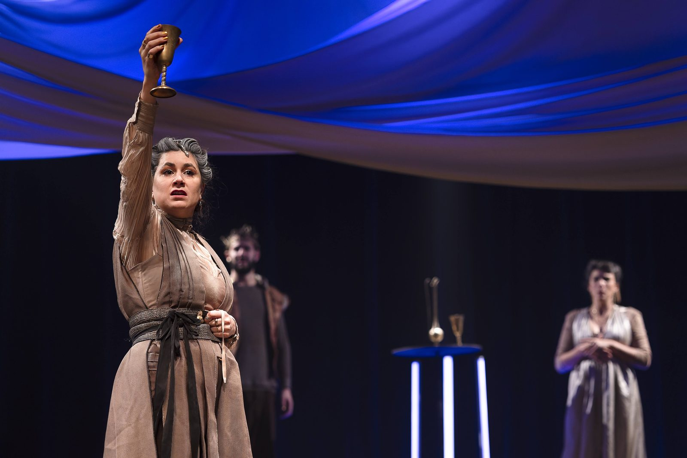
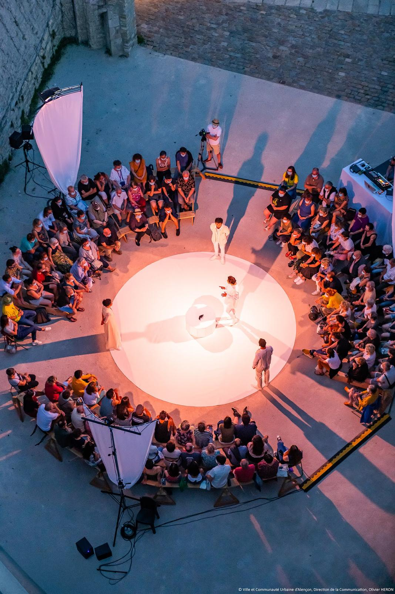
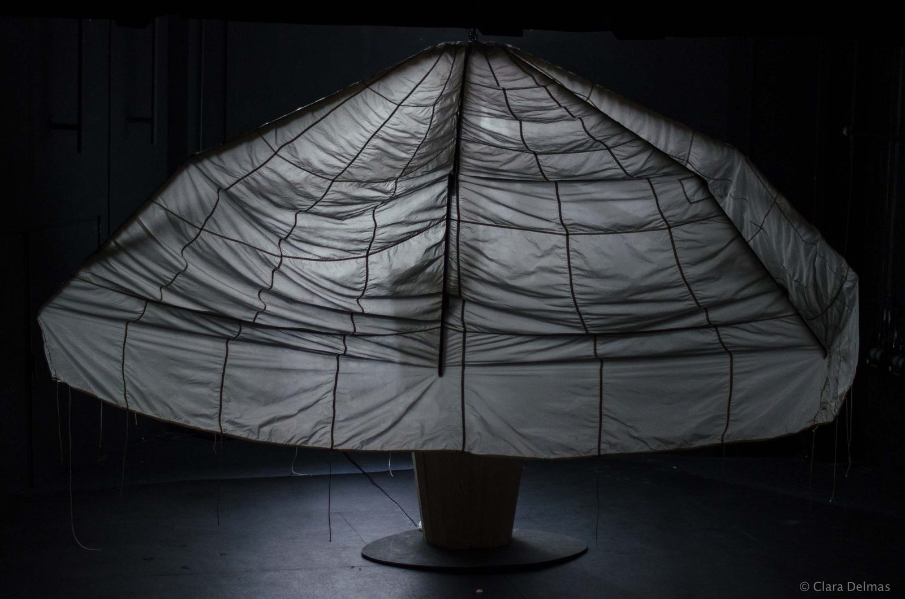

Adrien Vada — Artiste interprète
Répertoire
Théâtre
- Cassandres 2027 · Fiction d’anticipation En création Cassandres Rôles multiples
- L’Imaginaire forcé 2026 · Comédie En création L’Imaginaire forcé Sganarelle
- 2026 · Théâtre documentaire En tournée À la barre, peine perdue ? Juge, accusé, greffier, avocat, narrateur
-

2025 · Spectacle de prévention Audiences Procureur général, juge, accusé, narrateur -

2024 · Tragédie En tournée Cléophène Antiochus - 2023 · Fable contemporaine Fulguré.e.s Adrien / Le jeune mec / Jerem
-

2022 · Tragédie En tournée Bérénice Antiochus -

2022 · Comédie As You Like It Touchstone